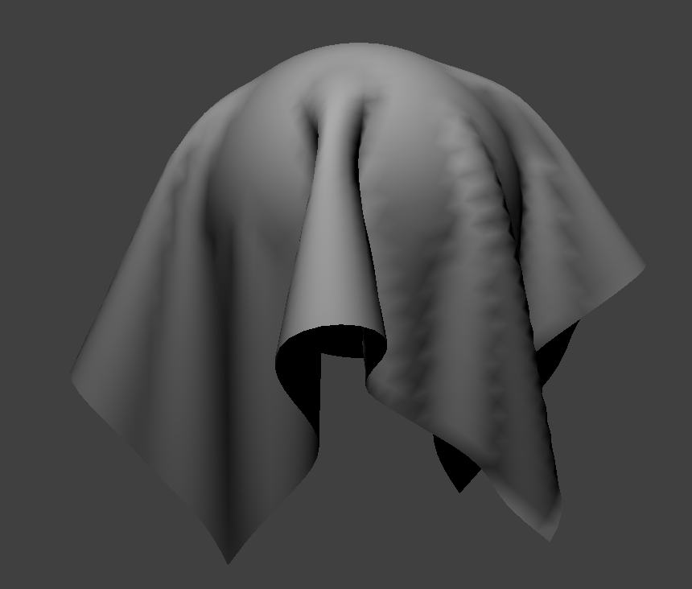
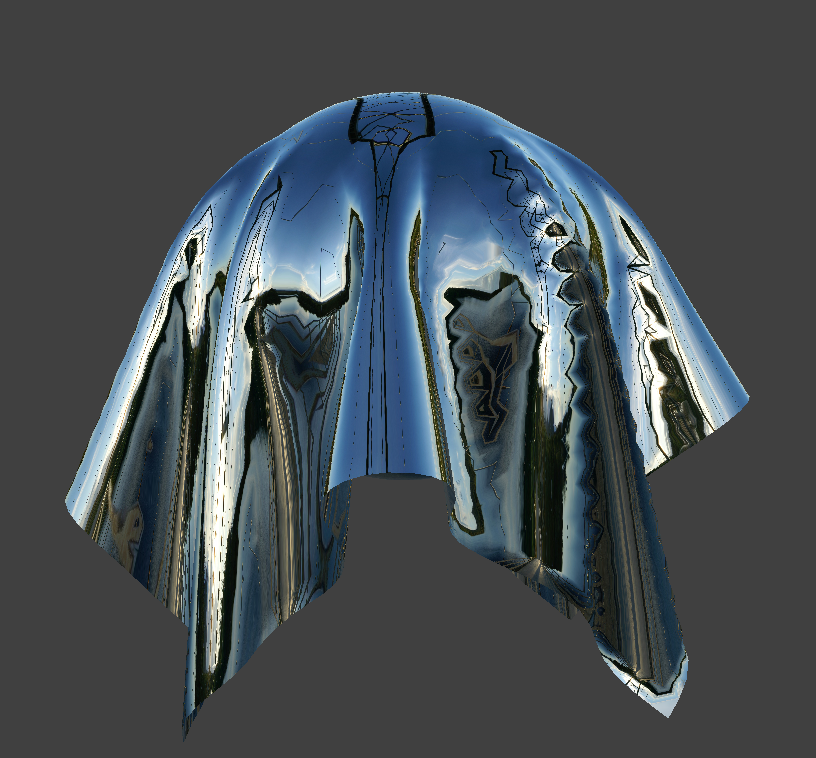

CS 184: Computer Graphics and Imaging, Spring 2024
Project 4: Cloth Simulator
Ong Jing Xuan
Website URL: https://cal-cs184-student.github.io/hw-webpages-sp24-ongjx16/hw4/index.html
Overview
In this project, I learned how to use point masses and springs to simulate the physical forces that would act on a cloth, and how to use sphere and plane intersection to model collision scenarios. In the last part, I also learned how to apply Blinn-Phong shading, bump shading, displacement shading and mirror shading onto the objects in the scene. I think what is so intersting about this project is that I learnt that fundamental physics building blocks like springs and point masses can be used to model seemingly different and complex materials like cloth, and it has led me to wander about all the other possible materials that could be simulated with this combination of forces.
Part 1: Masses and springs
Take some screenshots of scene/pinned2.json from a viewing angle where you can clearly see the cloth wireframe
to show the structure of your point masses and springs.
|
|
Initial configuration ($\text{ks} = 5,000$)
|
|
|
Show us what the wireframe looks like (1) without any shearing constraints,
(2) with only shearing constraints, and (3) with all constraints.
 No shearing constraints
No shearing constraints
|
 Only shearing constraints
Only shearing constraints
|
 All constraints
All constraints
|
Part 2: Simulation via numerical integration
Experiment with some the parameters in the simulation.
To do so, pause the simulation at the start with P, modify the values of interest, and then resume by pressing P again.
You can also restart the simulation at any time from the cloth's starting position by pressing R.
Describe the effects of changing the spring constant ks; how does the cloth behave from start to rest with a very low ks?
A high ks?
For a low ks, we can see that there are a lot more ripples in the cloth when it is falling from the starting position, and its resting position has creases that make the cloth look looser. On the other hand, with a very high ks, the cloth is alot stiffer when falling from the start position, and ends in a position where the ripples in the cloth are alot bigger (less deformation throughout). This is because increasing the spring constant increases the "stiffness" of the spring, and thus a higher ks would result in less obvious deformations throughout the falling motion and also in the resting state.
What about for density?
For a lower density, the concave part of the hanging cloth is less concaved as compared to a higher density, as one can imagine that the cloth is heavier when its density increases. As for the falling motion, the ripples created in the cloth are more obvious during the fall when the cloth density is higher.
What about for damping?
For damping, a higher damping percentage results in the cloth settling into its final position much faster than with a lower damping percentage. This is because the damping effects on the moving cloth increases as the damping percentage increases, which stops the motion of the cloth more quickly.
For each of the above, observe any noticeable differences in the cloth compared to the default parameters
and show us some screenshots of those interesting differences and describe when they occur.
|
Default Parameters
|
Low Damping (0.0115%) [in motion]
|
|
|
High Spring Constant (20000 N/m)
|
Low Spring Constant (5 N/m)
|
|
|
High Density (100 g/cm^2)
|
Low Density (5 g/cm^2)
|
|
As mentioned in the analysis above, low damping causes a greater duration and range in motion as the cloth settles into its resting position. A high spring constant results in less deformation than low spring constant, and a higher density results in higher deformation as the cloth is heavier and hangs lower.
Show us a screenshot of your shaded cloth from scene/pinned4.json in its final resting state!
If you choose to use different parameters than the default ones, please list them.
Part 3: Handling collisions with other objects
Show us screenshots of your shaded cloth from scene/sphere.json in its final resting state
on the sphere using the default ks = 5000 as well as with ks = 500 and ks = 50000.
|
$\text{ks} = 500$
|
Initial configuration ($\text{ks} = 5,000$)
|
$\text{ks} = 50,000$
|
|
Describe the differences in the results.
As the spring constant decreases, the cloth appears less stiff in its resting form on the sphere, and drapes better on the sphere, with more folds. As the spring constant decreases, the deformation of the cloth increases.
Show us a screenshot of your shaded cloth lying peacefully at rest on the plane.
If you haven't by now, feel free to express your colorful creativity with the cloth!
(You will need to complete the shaders portion first to show custom colors.)
Part 4: Handling self-collisions
Show us at least 3 screenshots that document how your cloth falls and folds on itself,
starting with an early, initial self-collision
and ending with the cloth at a more restful state (even if it is still slightly bouncy on the ground).
|
Self collision 1
|
Self collision 2
|
Self collision 3
|
|
Vary the density as well as ks
and describe with words and screenshots how they affect the behavior of the cloth as it falls on itself.
|
$\text{density} = 5$
|
$\text{density} = 50$
|
|
$\text{ks} = 1,000$
|
$\text{ks} = 7,500$
|
When density is low, the cloth falls with more ripples, and its resting position has more folds as compared to that of a higher density. On the other hand, when density increases, the cloth tends to settle into a position that is flatter and has less ripples. When spring constant increases, more creases are formed in different areas, whereas when spring constant increases, these creases are less common and more subtle. This matches the concept that when spring constant increases, deformation decreases.
Part 5: Cloth Sim
Explain in your own words what is a shader program and how vertex and fragment shaders work together to create lighting and material effects.
Shader program is a program that runs on the gpu that is designed to directly handle rendering effects. Vertex shaders are primarily focused on translating vertices in the model coordinates to their screen coordinates. Edits to meshes for displacement shading are handled here. The rasterizer then interpolates the vertices' attributes (like position and normals) to produce fragments, which are passed to the fragment shaders. In the fragment shaders, lighting calculations are handled and each pixel (or fragment) is assigned a vec4 output (rgba), which gives the colour and texture of each pixel in the resultant render.
Explain the Blinn-Phong shading model in your own words.
Show a screenshot of your Blinn-Phong shader outputting only the ambient component, a screen shot only outputting the diffuse component, a screen shot only outputting the specular component, and one using the entire Blinn-Phong model.
The Blinn-Phong shading model builds on the diffusion shading model by not only calculating diffused light, but also specular light and ambient light to create a more realistic render. The specular light is calculated by measuring the "nearness" of the half vector and the surface normal by using dot product.
 Ambient component only
Ambient component only
|

Diffuse component only
|
|
Specular component only
|
 Complete Blinn-Phong model
Complete Blinn-Phong model
|
Show a screenshot of your texture mapping shader using your own custom texture by modifying the textures in /textures/.
Show a screenshot of bump mapping on the cloth and on the sphere.
Show a screenshot of displacement mapping on the sphere.
Use the same texture for both renders.
You can either provide your own texture or use one of the ones in the textures directory,
BUT choose one that's not the default texture_2.png.
Compare the two approaches and resulting renders in your own words.
Compare how your the two shaders react to the sphere by changing the sphere mesh's coarseness by using -o 16 -a 16 and then -o 128 -a 128.
|
Bump Mapping on the Cloth
|
Bump Mapping on the Sphere
|
|
|
Displacement Mapping on the Sphere
|
Displacement Mapping on the Sphere (coarser mesh)
|
|
Comparing the resulting render from bump shading and displacement shading on the sphere, we can tell clearly that the mesh of the sphere itself changes in displacement shading, but not in bump shading. This is because bump shading relies on scaling the surface normal based on the height of the texture and thus manipulating the resultant pixel values, but displacement shading goes one step further and changes the mesh based on the height of the texture as well. When the resolution increases and the mesh coarseness decreases, we can also tell that the visible bumps on the sphere due to displacement mapping decreases in significance, and is more subtle since the mesh is now more "accurate" in a sense.
Show a screenshot of your mirror shader on the cloth and on the sphere.
|

Mirror Shader on the Cloth
|
Mirror Shader on the Sphere
|
|